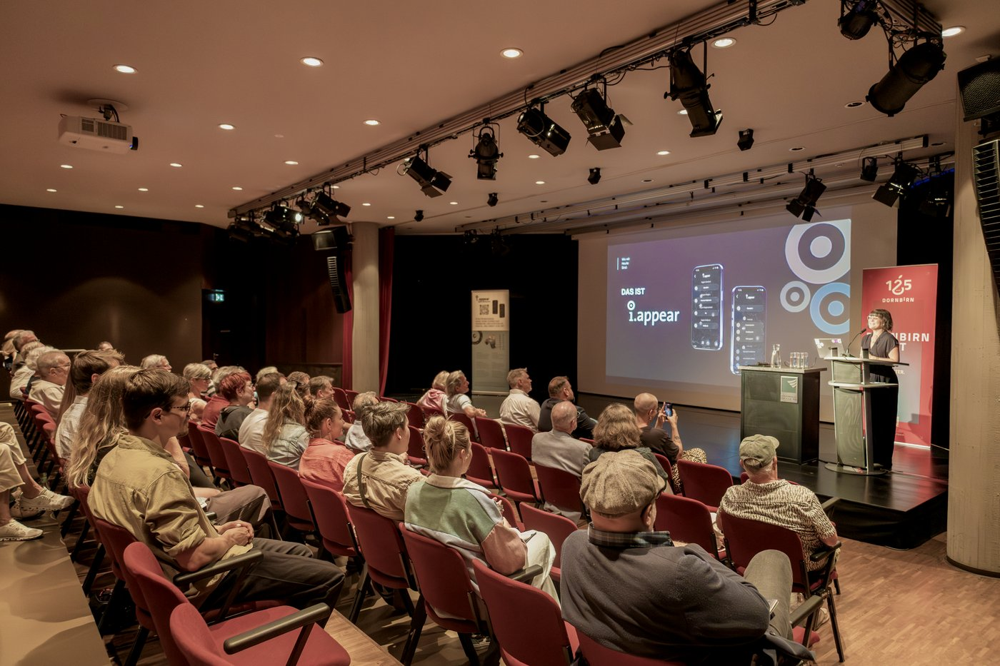
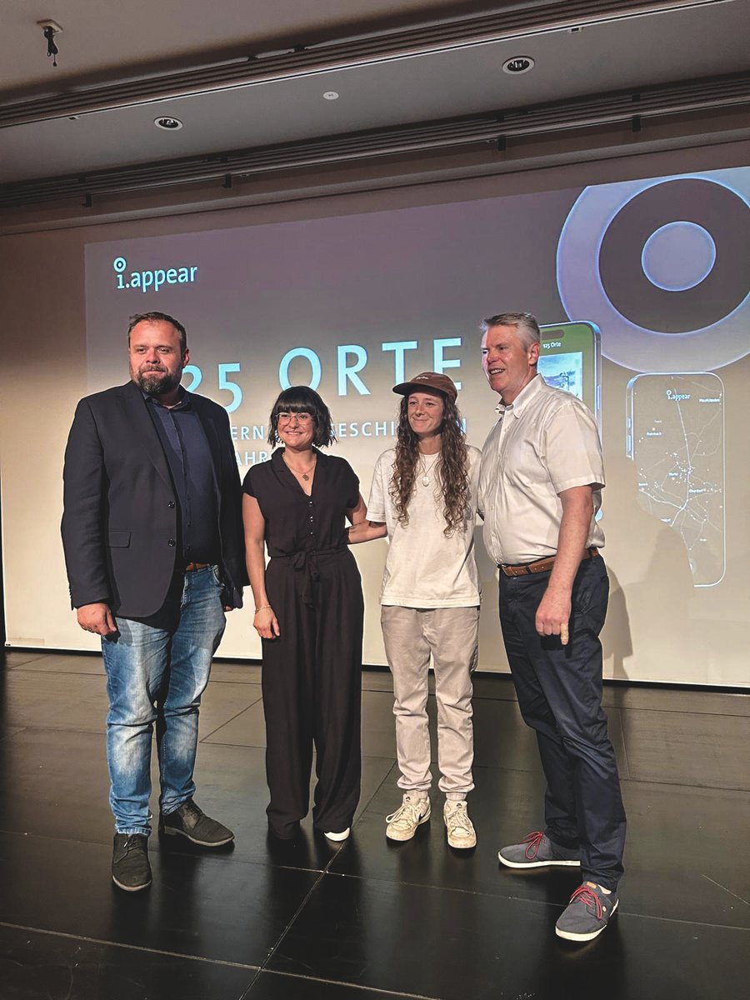
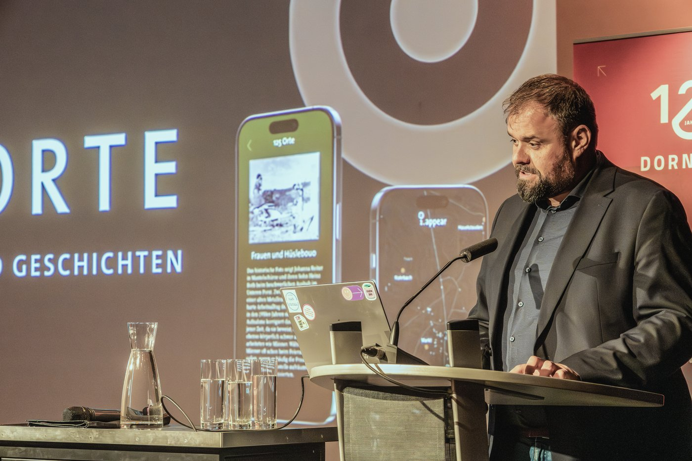

Seit Dienstagabend ist Dornbirns achter Stadtrundgang live. „125 Jahre – 125 Bilder“ legt die Geschichte der ganzen Stadt auf die i.appear-Karte: viele kleine Tupfen, verstreut über alle Bezirke, dort, wo Dornbirn tatsächlich lebt. In bekannten Gassen genauso wie in den unbekannten, vor der eigenen Haustür, an den Lieblingsorten der Dornbirner:innen. Wer gleich losgehen will: „125 Jahre – 125 Bilder“ auf i.appear.
Der Anlass ist ein runder Geburtstag. 1901, vor 125 Jahren, wurde Dornbirn zur Stadt erhoben. Unter dem Motto „125 Plätze mit Blick in Vergangenheit und Zukunft“ macht der Rundgang dieses Jubiläum auf eine persönliche Weise sichtbar. Er verbindet historische Ansichten mit kleinen und grossen Geschichten und zeigt, wie sich die Stadt über die Jahrzehnte verändert hat.
Wie der Rundgang entstanden ist
Am Anfang stand das Stadtarchiv. Für das Jubiläum hat Stadtarchivar Werner Matt zusammen mit Viktor Glatz, Harald Rhomberg, Christian Tumler und dem ganzen Team einen Bilderschatz zusammengetragen – so viele historische Aufnahmen, dass es schade gewesen wäre, sie nur in einem Buch zu sammeln. Genau daraus ist die Idee zum Rundgang gewachsen. Wir haben 125 dieser Bilder aus dem Archiv geholt und über die ganze Stadt verteilt, an genau die Orte, an denen sie einst entstanden sind. Für den Bilderschatz, die Recherche und die wunderbare Zusammenarbeit möchten wir dem Stadtarchiv Dornbirn von Herzen danken.
Sechs Bezirke, 125 Bildpunkte
Der Rundgang ist zweistufig aufgebaut. Sechs Bezirksstationen erzählen jeweils die Geschichte ihres Stadtteils: Markt, Hatlerdorf, Oberdorf, Haselstauden, Rohrbach und Schoren. Dazwischen liegen die 125 Bildpunkte, über das gesamte Stadtgebiet gestreut, jeder mit einem historischen Bild und einem kurzen Text. Man muss den Rundgang nicht der Reihe nach gehen. Man stolpert über die Geschichte genau dort, wo man gerade steht.

Drei Datenvisualisierungen, direkt im Handy
Zum ersten Mal stecken interaktive Datenvisualisierungen in einem unserer Rundgänge, drei kleine Anwendungen, die direkt im Handy laufen. Eine Zeitachse sortiert alle 125 Bilder nach Jahr, sodass man einmal quer durch die Stadtgeschichte scrollen kann, von den ältesten Aufnahmen bis heute. Bei „Wenn du in Dornbirn geboren wärst…“ wählt man ein Jahr und sieht, in welche Stadt man hineingewachsen wäre. Und eine Animation des Siedlungswachstums zeigt, wie sich Dornbirn Jahrzehnt für Jahrzehnt vom Dorf zur Stadt ausgebreitet hat.
Diese drei sind erst der Anfang. Wir bauen daraus eine eigene Feature-Schiene, die nach und nach auch in weitere Rundgänge einfliessen soll. Wie gerade die Siedlungsanimation entstanden ist, von historischen Karten bis zur 3D-Berechnung, erzählen wir demnächst in einem eigenen Beitrag.
Ein Dach über Dornbirns Rundgängen
Damit ist „125 Jahre – 125 Bilder“ mehr als der achte Eintrag in unserer Liste. Weil seine Bildpunkte über die ganze Stadt verteilt sind, legt er sich wie ein Dach über die bestehenden Dornbirner Rundgänge hist.appear, Stadtspuren, Frauenspuren, Oberdorf entdecken und Innenstadt erkunden und verknüpft sie über gemeinsame Orte. Wer an einem Bildpunkt steht, ist oft nur ein paar Schritte von der Station eines anderen Rundgangs entfernt. So wächst nach und nach ein zusammenhängendes Netz aus Dornbirner Geschichte.
Der Eröffnungsabend
Gefeiert haben wir den Release am Dienstag im Kulturhaus Dornbirn. Bürgermeister Markus Fäßler hat die Eröffnungsrede gehalten, und wir durften den Rundgang samt der Technik dahinter vorstellen. Danach klang der Abend gemütlich aus, mit bester Versorgung durch Eugen & Emma: Catering und vielen Gesprächen über die Geschichte, die plötzlich überall in der Stadt auftaucht. Dem Bürgermeister danken wir für die Eröffnungsrede, dem Kulturhaus für den schönen Rahmen und Eugen & Emma für die herzliche Bewirtung.

Der grösste Dank aber gilt allen, die am Dienstag dabei waren und mitgefeiert haben. Genau dafür machen wir das.
„125 Jahre – 125 Bilder“ ist ab sofort kostenlos auf i.appear verfügbar. Einfach reinschauen, losgehen und die Stadt neu entdecken.